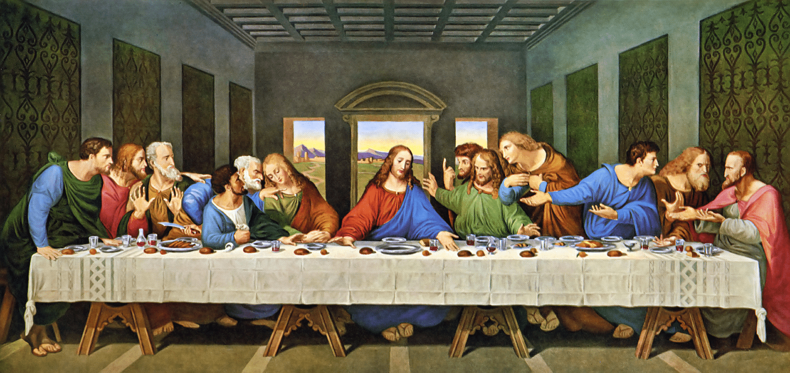

Benvenuti in questo magnifico museo, dove torverete una collezione di opere d'arte del Rinascimento italiano, ma non solo poichè vi verranno anche illustrate.
Per chi non lo sapesse il rinascimento italiano è il periodo che segue il medioevo, dunque dal 1492 d.c fino al 1660 d.c. ed è un termine coniato nel 1800.
È un periodo di grandi innovazioni che vede la scoperta della prospetti da parte di Filippo Brunelleschi, con l'uomo al centro dell'arte di scoperte riguardanti l'anatomia umana.
Molti pittori e non solo fanno parte del periodo del rinascimento, uno se non il più importante è Leonardo da Vinci, ma troverete tanti altri pittori e sculturi in questo museo.
In questo museo ci sono svariate opere rinascimentali, ma le più importanti sono le quelle che trovi nella tabella quì sotto
| NOME OPERA | NOME AUTORE | COGNOME AUTORE | ANNO | IMMAGINE | TIPO DI OPERA | |
| 1 | LA GIOCONDA | LEONARDO | DA VINCI | 1503 |  |
OLIO SU TAVOLA |
| 2 | IL DAVID | MICHELANGELO | BUONARROTI | 1504 |  |
SCULTURA DI MARMO |
| 3 | L'ULTIMA CENA | LEONARDO | DA VINCI | 1498 |  | AFFRESCO |
| 4 | LO SPOSALIZIO DELLA VERGINE | RAFFAELLO | SANZIO | 1504 |  |
OLIO SU TAVOLA |